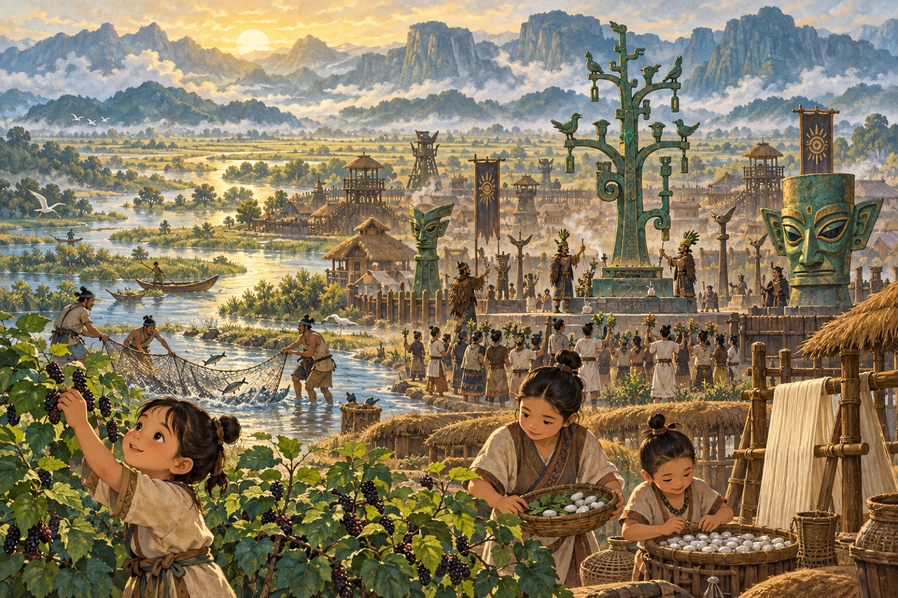

01 · 古蜀与考古
在蜀道打开以前，山里面已经有一个国家
传说名字＋考古实证

有多早？三星堆主体遗存约距今4100—3100年蚕丛、鱼凫属于古史传说，无法确定个人生活的准确年份
“蚕丛及鱼凫，开国何茫然。”李白一开口，就把我们带到了文字记录还很模糊的古蜀。
古书说，蚕丛、柏灌、鱼凫是很早以前的蜀王。蚕丛的名字让人想到养蚕，鱼凫的名字让人想到捕鱼和水鸟。可他们生活在哪一年、长什么样，后人已经说不清了。所以李白写“何茫然”——不是说古蜀什么都没有，而是年代太远，记载像山雾一样朦胧。
直到考古学家在广汉发现三星堆，我们才看见古蜀留下的另一种“文字”：青铜人像、纵目面具、金面具、青铜神树、象牙和玉器。它们证明，中原的夏商时代，成都平原已经有一个城市、手工业和礼仪都很发达的古蜀文明。
学者常把三星堆文化与蚕丛、柏灌、鱼凫时代联系起来。但我们不能指着一件面具就说“这一定是蚕丛”，也不能把金杖上的鱼鸟直接认作鱼凫本人。传说给了我们名字，考古给了我们真实的城市和器物，中间还有许多谜。
山外秦地和山里蜀地并非完全没有交流，不过高山让往来非常艰难。李白于是把漫长的阻隔写得极其夸张：“尔来四万八千岁，不与秦塞通人烟。”
山路还没有打开，文明早已在山里面生长。